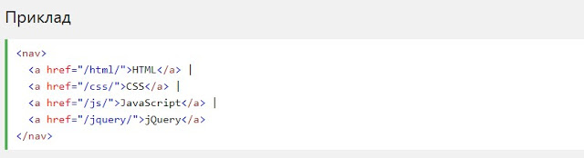

HTML5 <section> елемент
Елемент <section>визначає розділ в документі.
Згідно з документацією в3к'с HTML5: "розділ представляє собою тематичну угруповання контенту, зазвичай з
заголовком".
Домашня сторінка зазвичай може бути розділена на розділи для ознайомлення, змісту і контактної
інформації.

HTML5 <article> елемент
Елемент <article>визначає незалежний, автономний вміст.
Стаття повинна мати сенс самостійно, і вона повинна мати можливість читати його незалежно від іншої
частини
веб-сайту.
Приклади того, де можна використовувати елемент
<article>:
- Повідомлення на форумі
- блозі
- Газетна стаття

Вкладення <article> в <section> або навпаки?
Елемент <article>визначає незалежне, автономне вміст.
Елемент <section>визначає розділ в документі.
Чи можемо ми використовувати визначення, щоб вирішити, як вкладати ці елементи? Ні, ми не можемо!
Таким чином, в Інтернеті ви знайдете HTML-сторінки з <section>елементами, що містять елементи
<article>, і <article>елементи, що містять <section>елементи.
Ви також знайдете сторінки з елементами <section>, що містять елементи <section>, і
<article>елементи, що містять <article>елементи.
HTML5 <Nav> елемент
Елемент <nav>визначає набір навігаційних посилань.
Зверніть увагу, що не всі посилання документа повинні знаходитися всередині елемента <nav>. Елемент
<nav>призначений тільки для основного блоку навігаційних посилань.
